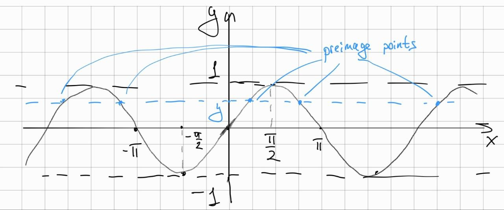

Can a continuous on \(\mathbb{R}\) function be a reverse for everywhere discontinuous function on the segment?
I found the problem in the calculus tasks for the fist-year students in my university. It goes as follows:
Quote
The function \(f\) is continuous on \(\mathbb{R}\), and the function \(g\) is defined on the interval \([0, 1]\). It is known that for every \(x\) in \([0,1]\), \(f(g(x)) = x\). Is \(g\) necessarily continuous at least at one point?
Reformulation
First, let's look at the task from a different angle. For \(\forall y \in Imf = [0, 1]\) we have a preimage set:
Function \(g: [0, 1] \to \mathbb{R}\) for every \(y\) choose some point from the preimage:
Then, the condition from the problem holds:
Can \(g\) be discontinuous everywhere for some \(f\)?
Solution
Let's construct an example. First, without loss of generality we take the segment from the problem to be \([-1, 1]\). Take \(f(x) = \sin x: \mathbb{R} \to [-1, 1]\). Then, take \(g(y) = \sin^{-1} y = \arcsin y\) for the \(y \in \mathbb{J} \cap [-1, 1]\). For the \(y \in \mathbb{Q} \cap [-1, 1]\) there exists a countable number of preimage points for the \(f\) (see figure below). Every preimage point belongs to the segment of type \([2 \pi n, 2 \pi n + \frac{\pi}{2}], \ n \in \mathbb{Z} \backslash \{0\}\). The set \(\mathbb{Q} \cap [-1, 1]\) is countable as well. Therefore, define \(g(y)\) to take the unique segment described above \(\forall y \in \mathbb{Q} \cap [-1, 1]\). Note that for the irrational \(y\) we have \(g(y) \in [0, \frac{\pi}{2}]\).

The constructed \(g\) is discontinuous at every point; \(\forall y \in [-1, 1]\) we construct two Heine sequences. First is some
The second is some
Then, either \(g(y_n^2)\) does not have a limit or it has one but then it cannot coincide with the \(\arcsin y\) because it lies in the segment \([2 \pi n, 2 \pi n + \frac{\pi}{2}]\) for \(n = 0\). Anyway, we have discontinuity in every point of \([-1, 1]\) for the \(g\) by the Heine criterion of the discontinuity.
The (1) is true by the construction of the \(g\) and the reasoning in the section above.